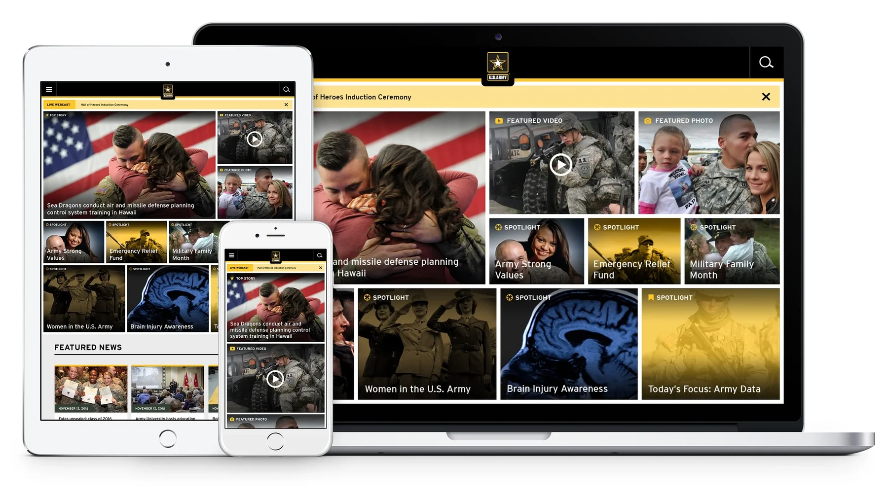

eBay asked for AI Mode. I reframed the brief: what judgment should an agent take on, and what decisions stay with the person?
Unique items, variable condition and offers leave buyers checking before purchase; sellers face a demanding listing process.
I started with how people actually search. I studied specific search use cases, like shopping by size and finding items for local pickup. That work informed 13 focused modes for AI Mode and defined how the agent helps people disambiguate what they mean.
I labeled unverified claims as hypotheses. I merged 13 buyer prompts into concepts, added a seller case, then ranked 12 by value, eBay advantage and clarity. Deal Hunter and Sell It for Me came first.
Every flow followed confidence, stakes and reversibility: act, ask or wait. Review showed one approval could send two offers and exceed a shopper's budget. I fixed it and tightened safeguards for exposure, evidence and preferences.
The concept prototype is not shipped or tested. Next, test the gates and claims, then pilot one category.
Define delegation before designing the agent, then validate.
Suppliers used 100+ apps to work with Walmart; onboarding averaged 47 days. I led strategy and design for moving the first eight tools into Supplier One across four squads.
Research showed suppliers grouped work by task, while Walmart's tools reflected internal systems. I reframed consolidation as helping suppliers finish work in one place. Eight tools became five task areas, with a role-specific home page.
I built a Living Design subsystem for complex tables and workflows, documented it, and helped squads adopt it. I established visual QA with engineering and staged rollout in three waves.
Another Walmart team adopted our table pattern. The migration continued; next, I would prioritize frequent tasks and measure completion without leaving Supplier One.

Organize around supplier work and measure the difference. Future teams can reuse the patterns.
Pro accounts had only Admin or Purchaser roles, leaving contractors unable to control crew purchases before checkout.
The workflow mattered to 11,000 legacy IBI customers and $86 million in annual Pro revenue.
As sole designer, I partnered with product, research and engineering. Fifteen Pro interviews showed owners wanted control before purchase. I proposed workflow as the shared framework for teams' spend limits, product lists, job names, requesters and approvers.
I mapped owner, requester and approver flows. Backend limits narrowed the MVP to one spend limit and comments, while preserving owner control and visibility. Testing led to multi-select for large accounts and clearer language.
After launch, workflow became proof of concept for Projects. I would test technical risk earlier, while protecting customer control.
Design a framework that can grow beyond the first feature. It gave Projects a reusable foundation.
InsideRM replaced TASB RMF's hard-to-find newsletter archive with a responsive blog for Texas school districts. As Lead UX Designer, I led research and IA for readers and editors.
Research showed useful News & Views articles were buried, while advanced search was outside budget. I organized content into durable categories and made them the main navigation. Breadcrumbs and persistent navigation helped readers explore and return.
I designed featured, category, and article templates, plus a sticky email, print, and social toolbar. Kentico let nontechnical editors publish without code.
I helped establish TASB's organization-wide design system and WCAG 2.1 AA standards. Other TASB blogs reused the template.
Search and structure work together. Clear categories make expertise easy to find, whether readers search or browse.
Army.mil had no shared digital standards. More than 10,000 pages and inconsistent patterns made page-by-page design unsustainable.
At SAIC, I led the redesign with Army Public Affairs and established the first open-source component library for Army digital products.
Discovery exposed broken links, confusing navigation, mobile demand, and Section 508 and IE9 constraints. I reframed the work from a visual refresh into a scalable publishing system. I defined responsive standards and reusable components for navigation, search and page layouts, then worked with developers to implement them in a legacy CMS.

A design system is governance and infrastructure. It helps teams deliver consistent, accessible experiences while adapting content without rebuilding every page.